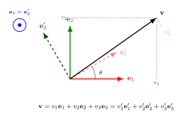

向量空间与基 — 把"叠加原理"做成数学
第一卷里, 我们看过两束相干光叠加成新的光场; 第三卷里, 量子力学几乎所有的式子都长成 $|\psi\rangle = c_1|1\rangle + c_2|2\rangle + \cdots$. 这个 "$+$" 看上去和小学里 $1+1=2$ 的加号长得一样, 但它的对象——光场、量子态、向量箭头——并不是数. 那么这个加号到底是什么意思? 为什么我们可以放心地把光、把波函数、把多项式拿来"加起来"再"乘以一个数"? 这一节我们把这件看起来无害的事做严格. 它的回报是巨大的: 一旦"叠加"被收进一组明确的公理里, 我们就有了基、维度、坐标这些工具, 而所有线性代数——以至大半量子力学——就从这里长出来.
一、八条公理: 把"叠加"圈起来
我们从一个最具体的问题开始. 在三维空间里, 一根粉笔被推动 $\mathbf u$ 之后又被推动 $\mathbf v$, 总位移是 $\mathbf u + \mathbf v$. 显然 $\mathbf u + \mathbf v = \mathbf v + \mathbf u$ (先推哪一下都一样), 显然有"不动" $\mathbf 0$, 显然把 $\mathbf u$ 拉长两倍记作 $2\mathbf u$. 这是几何直觉. 可是当我们把"位移"换成"光场"、"波函数"、"温度分布", 加号还能保持原来的脾气吗? 一个负责任的数学家会说: 让我们把这些"脾气"列出来, 凡是满足这些脾气的对象, 我们就一律承认它是"向量"——不管它实际上是箭头、是函数, 还是别的什么.
给定一个数域 $\mathbb F$ (本节默认是 $\mathbb R$ 或 $\mathbb C$), 一个集合 $V$ 配上两种运算, 加法 $+ : V\times V\to V$ 和标量乘 $\cdot : \mathbb F\times V\to V$, 如果它们满足以下八条, 就把 $(V, +, \cdot)$ 叫作 $\mathbb F$ 上的向量空间:
$$ \begin{aligned} & \text{(A1) 交换:}\quad u+v = v+u, \\ & \text{(A2) 结合:}\quad (u+v)+w = u+(v+w), \\ & \text{(A3) 零元:}\quad \exists\, 0\in V,\ v+0 = v, \\ & \text{(A4) 逆元:}\quad \forall v\in V,\ \exists\, (-v),\ v+(-v)=0, \\ & \text{(M1) 分配:}\quad a(u+v) = au + av, \\ & \text{(M2) 分配:}\quad (a+b)v = av + bv, \\ & \text{(M3) 结合:}\quad (ab)v = a(bv), \\ & \text{(M4) 单位:}\quad 1\cdot v = v. \end{aligned} \tag{1} $$
这就是定义 (1). 八条规矩看似罗嗦, 其实只在说两件事: 加法像加法 (前四条), 标量乘和加法兼容 (后四条). 任何对象只要在某个意义上"能加"且"能乘以数", 我们都先按这八条对它做一次体检. 通过的就给它发一张身份证, 名字叫向量空间.
注意, 公理里没有要求"长度"也没有要求"角度"——那些是后面要加的内积. 现在向量空间只负责一件事: 让"叠加"这件事有定义.
二、三个例子: $\mathbb R^n$、多项式、函数
例一 (有限维数组). $\mathbb R^n$, 即所有 $n$ 元实数组 $(x_1, \ldots, x_n)$, 配上分量加和分量数乘, 显然满足 (1) 的八条. 同理 $\mathbb C^n$. 这是最古老、最直观的例子, 几何上就是箭头. 卷一里的电场矢量、力、动量, 全部住在 $\mathbb R^3$ 或它的复化里.
例二 (多项式空间). 取所有次数不超过 $n$ 的实系数多项式
$$ P_n = \{a_0 + a_1 x + a_2 x^2 + \cdots + a_n x^n : a_i \in \mathbb R\}. $$
定义 $(p+q)(x) = p(x) + q(x)$, $(\lambda p)(x) = \lambda \cdot p(x)$. 让我们验证一两条. (M1): 对任意 $\lambda \in \mathbb R$ 和 $p, q \in P_n$,
$$ (\lambda(p+q))(x) = \lambda(p(x)+q(x)) = \lambda p(x) + \lambda q(x) = (\lambda p + \lambda q)(x), $$
所以 $\lambda(p+q) = \lambda p + \lambda q$. (A3): 零多项式 $0(x) \equiv 0$ 显然满足 $p + 0 = p$. 余下六条同样平凡. 于是 $P_n$ 也是 $\mathbb R$ 上的向量空间.
例三 (函数空间). 区间 $[a,b]$ 上的连续实函数全体 $C[a,b]$, 加法 $(f+g)(x) = f(x)+g(x)$, 数乘 $(\lambda f)(x) = \lambda f(x)$. 因为连续函数的和与数乘仍连续, 运算闭合; 八条公理逐条检查都化归到逐点的实数加乘, 自动通过. $C[a,b]$ 也是 $\mathbb R$ 上的向量空间——但它已经不是有限维的. 把"向量"扩展成"函数"是 19 世纪末到 20 世纪初的一场重大概念革命, 我们后面再细说.
这三个例子放在一起就出现了一件神奇的事: $\mathbb R^3$ 里的箭头、$P_2$ 里的二次多项式、$C[0,1]$ 里的连续函数, 表面上看毫无关系, 可它们都遵循同一套八条公理. 任何一条只用 (1) 推出来的命题, 都对它们三者同时有效. 这就是"抽象"换来的回报——一份证明卖给三种不同的东西.
三、线性独立、张成、基
有了向量空间, 下一个问题马上来到: 这些向量里, 哪几个是独立的"原料", 哪些只是它们的线性组合? 我们给出第二条编号定义.
定义 (2): 线性独立. 设 $V$ 是 $\mathbb F$ 上的向量空间, $v_1, \ldots, v_k \in V$. 若
$$ c_1 v_1 + c_2 v_2 + \cdots + c_k v_k = 0 \tag{2} $$
仅当所有 $c_i = 0$ 时成立, 则称 $\{v_1, \ldots, v_k\}$ 线性独立; 否则线性相关.
"线性相关"具体的意思是: 至少有一个 $v_i$ 可以写成其余几个的线性组合, 在原料表里它是多余的. 例如在 $\mathbb R^3$ 里, $(1,0,0), (0,1,0), (1,1,0)$ 三个向量线性相关, 因为第三个是前两个的和.
把线性独立和"撒满整个空间"两件事拼在一起, 就得到基.
定义 (3): 基. 若 $V$ 中一组向量 $\{e_1, \ldots, e_n\}$ 既线性独立, 又满足: 对任意 $v\in V$, 存在唯一的标量 $(v_1, \ldots, v_n)$ 使
$$ v = v_1 e_1 + v_2 e_2 + \cdots + v_n e_n, \tag{3} $$
则称之为 $V$ 的一组基. 此时 $V$ 称为有限维, 数 $n$ 称为 $V$ 的维度, 记作 $\dim V$.
这里有一个非平凡的事实: 同一空间的任意两组基, 元素个数相等. 没有这条, 维度这个数就没有意义. 它的证明用到所谓"替换引理": 任何一组线性独立的向量都可以一对一地"换"进任意一组张成集中, 不会让张成性丢掉. 我们这里不展开, 但请记住这件事——它是几何空间"三维"、相空间"$2n$ 维"这些说法的合法性来源.
给定基之后, $v$ 的"坐标"$(v_1, \ldots, v_n)$ 由 (3) 唯一确定. 如果换一组基 $\{e'_1, \ldots, e'_n\}$, 同一个 $v$ 就有另一套坐标 $(v'_1, \ldots, v'_n)$. 向量本身不变, 变的是坐标, 这是"协变与逆变"分得清楚的起点.

四、具体计算: 多项式空间 $P_2$ 的两组基
抽象定义不代入数字总是隔着一层. 让我们在 $P_2$——次数不超过 2 的实系数多项式空间——里把基的概念演算一遍.
(a) 标准基. 取 $\{1, x, x^2\}$. 验证线性独立: 若 $a\cdot 1 + b\cdot x + c\cdot x^2 \equiv 0$ 对所有 $x$ 成立, 在 $x=0$ 取值得 $a=0$, 求一阶导后取 $x=0$ 得 $b=0$, 余下 $cx^2 \equiv 0$ 给 $c=0$. 故线性独立. 张成: 任何二次多项式 $a_0 + a_1 x + a_2 x^2$ 显然是它们的组合. 所以 $\{1, x, x^2\}$ 是基, $\dim P_2 = 3$.
(b) 另一组基: Legendre 多项式. 在区间 $[-1,1]$ 上常常使用
$$ L_0(x) = 1, \quad L_1(x) = x, \quad L_2(x) = \tfrac{1}{2}(3x^2 - 1). $$
它们也是 $P_2$ 的一组基. 现在让我们具体地把多项式 $p(x) = 2 - x + 4x^2$ 在两组基下都展开一次.
在标准基下显然 $p = 2\cdot 1 + (-1)\cdot x + 4\cdot x^2$, 坐标 $(2,-1,4)$.
在 Legendre 基下我们写 $p = \alpha_0 L_0 + \alpha_1 L_1 + \alpha_2 L_2$, 即
$$ 2 - x + 4x^2 = \alpha_0 + \alpha_1 x + \alpha_2\cdot\tfrac{1}{2}(3x^2-1) = \big(\alpha_0 - \tfrac{\alpha_2}{2}\big) + \alpha_1 x + \tfrac{3\alpha_2}{2}\, x^2. $$
对系数: $\tfrac{3\alpha_2}{2} = 4 \Rightarrow \alpha_2 = \tfrac{8}{3}$; $\alpha_1 = -1$; $\alpha_0 - \tfrac{\alpha_2}{2} = 2 \Rightarrow \alpha_0 = 2 + \tfrac{4}{3} = \tfrac{10}{3}$. 故
$$ p = \tfrac{10}{3} L_0 - L_1 + \tfrac{8}{3} L_2, $$
坐标 $(\tfrac{10}{3}, -1, \tfrac{8}{3})$. 同一个多项式, 两套坐标. 这件事在卷三的量子力学里反复出现: 一个量子态 $|\psi\rangle$ 在能量本征基 $\{|n\rangle\}$ 下有一套展开系数, 在位置本征基 $\{|x\rangle\}$ 下又是另一套——后者就是波函数 $\psi(x) = \langle x|\psi\rangle$. 它们描写同一个物理对象.
顺带一句: 选 Legendre 基不是为了好看. 在内积 $\langle f, g\rangle = \int_{-1}^{1} f(x)g(x)\,\mathrm dx$ 下它们两两正交, 这让"投影到基上求系数"变得机械; 卷一光学里把光场展开到傅里叶模、卷三里把波函数展开到能量本征态, 都是这个思路. 这是下一节"内积与正交"会接的话题.
五、物理回响与历史
把视线放回物理. 卷一第二节里, "两束光叠加" 数学上正是电场矢量在每个时空点上的相加; 偏振态——左旋、右旋, 或水平、垂直——构成一个 2 维复向量空间, 这正是后来量子比特概念的鼻祖. 卷一里所有"线性"二字——线性极化、线性介质、线性叠加——都隐藏着这一节的八条公理.
卷三的振幅就更直白. Schrödinger 方程的左侧是 $\mathrm i\hbar\,\partial_t |\psi\rangle$, 解空间对加法和数乘是封闭的; 这意味着量子态住在一个向量空间里, 因此能量本征态可以充当基, 任何态都能展开为它们的叠加. 这一切如果没有"向量空间"作为公设级别的舞台, 连"叠加原理"四个字都难以被严格地说清楚.
历史上, 这件事的成型相当晚. 直到 1844 年, 德国中学教师 Hermann Grassmann 才在《延伸论》(Die lineale Ausdehnungslehre) 里第一次系统地构造了一个 $n$ 维"延伸"的几何代数——他想要一个能把箭头、力、矩等几何对象一同处理的形式系统. 不幸, 这本书写得艰涩, 同代人几乎读不下去. 1888 年意大利人 Giuseppe Peano 在《几何演算》一书里把 Grassmann 的想法剥下几何外衣, 用九条 (与今天的八条等价) 公理写下了实数域上向量空间的现代定义——这是历史上第一次有人把"加法 + 标量乘"作为一切的起点, 不再依赖任何特定的"$n$ 维"或"箭头"图像. 那一年距离 Maxwell 写下电磁方程才二十多年, 距离 Hilbert 把这套形式推到无限维 ($\ell^2$, $L^2$ 等) 还要再过约二十年. 1932 年 von Neumann 把无限维向量空间 (Hilbert 空间) 确立为量子力学的标准舞台时, Peano 那本书已经躺在图书馆角落四十多年, 但它的八条公理一字未改. 这就是抽象的力量: 一旦把规则定下来, 它就会等所有的物理一个一个走过来证明它的预见.
小结
这一节我们把"叠加"翻译成了"向量空间", 八条公理 (1) 框住了加法和数乘的全部脾气, 例 $\mathbb R^n$、$P_n$、$C[a,b]$ 让公理落地成具体对象, 线性独立 (2) 与基 (3) 给了我们坐标和维度. 卷一光的偏振、卷三量子态的叠加都是它的直接应用; Grassmann 1844 与 Peano 1888 是它在数学侧的两块基石. 但向量空间还只是一个空房子: 它不能告诉我们两个向量"夹角多少"、"长度多少". 下一节进入 Dirac 的 bra-ket 记号与内积, 我们会看到正交、投影和测量概率从同一个简单的双线性型里一齐生出来——并且会发现, 把 $\sum$ 换成 $\int$ 之后, 整个故事一字不改地搬到无限维.
▲